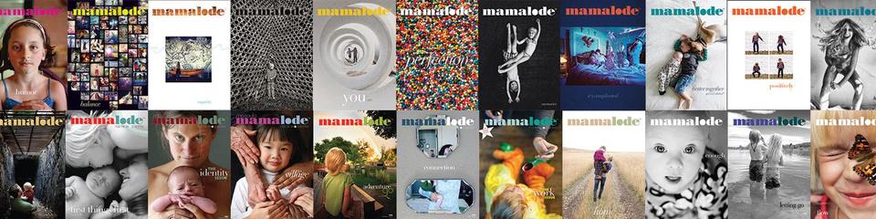
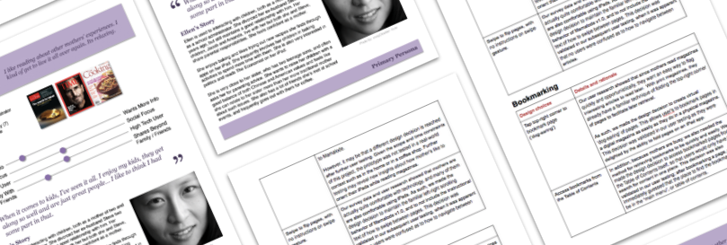

Interviews
Note: I ran this study as part of my Masters coursework with a team of four other students, all of whom now work in UX and Project Management
Mamalode, a lifestyle magazine targeting working mothers in Montana, was in the middle of redesigning their iOS app and wanted a better understanding of how their app might support local connections around parenting. I worked with a team of four other researchers to study how Mamlode's target audience sought-out and shared parenting stories and advice.
Mamalode is a lifestyle magazine targeting mothers in Montana.
Our main constraint was time. Since we had to deliver a working prototype and product spec by the end of our 10-week course, we could only devote a few weeks to research. Under this constraint, we decided to run a two part study: survey working mothers about their magazine and story-sharing habits, and conduct in-person interviews with a handful of mothers. I helped focus the survey on answering quantifiable questions followed by open-ended explanations (e.g., What magazines do you currently read? Why? Who do you discuss parenting with? Why?) Realizing that mothers may be reluctant to speak about parenting with young adults who did not have kids, we designed our interviews to focus on activities (e.g., mapping a parenting social network, exploring the current Mamalode app) that could break the ice and lead to richer follow-up discussions.
To meet our time constraints we used Friends and Family recruiting to find working mothers for both the survey and interviews. Having multiple researchers attend each interview meant one could focus on leading the discussion while the other took notes.
From our surveys we were able to identify distinct categories of working mothers that we developed into personas, dividing them according to their tendancies when seeking and sharing partenting information. We also developed a spec for the Mamalode app development team that presented specific product recommendations grounded in data from our studies. After the course we lost touch with the team, so cannot report on whether and how they implemented our recommendations.
We developed personas and a product spec based on data from our survey and interviews.